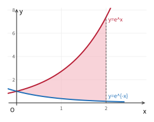
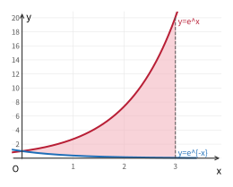
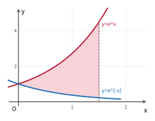

別冊練習問題 3 の解答 2曲線で囲まれた部分の面積
(1) 2曲線 \(y=e^x,\ y=e^{-x}\) と直線 \(x=2\) で囲まれた部分の面積を求めよ。
上下を確認
\(0\leqq x\leqq 2\) で \(e^x\geqq e^{-x}\)（\(x=0\) で一致）。

面積の式
\[S=\int_0^{2}\left(e^x-e^{-x}\right)dx=\left[e^x+e^{-x}\right]_0^{2}\]計算
\[=\left(e^{2}+e^{-2}\right)-(1+1)=e^{2}+e^{-2}-2\]【答案】
\[e^{2}+e^{-2}-2\]答
(2) 2曲線 \(y=e^x,\ y=e^{-x}\) と直線 \(x=3\) で囲まれた部分の面積を求めよ。
上下を確認
\(0\leqq x\leqq 3\) で \(e^x\geqq e^{-x}\)（\(x=0\) で一致）。

面積の式
\[S=\int_0^{3}\left(e^x-e^{-x}\right)dx=\left[e^x+e^{-x}\right]_0^{3}\]計算
\[=\left(e^{3}+e^{-3}\right)-(1+1)=e^{3}+e^{-3}-2\]【答案】
\[e^{3}+e^{-3}-2\]答
(3) 2曲線 \(y=e^x,\ y=e^{-x}\) と直線 \(x=\dfrac{3}{2}\) で囲まれた部分の面積を求めよ。
上下を確認
\(0\leqq x\leqq \dfrac{3}{2}\) で \(e^x\geqq e^{-x}\)（\(x=0\) で一致）。

面積の式
\[S=\int_0^{\dfrac{3}{2}}\left(e^x-e^{-x}\right)dx=\left[e^x+e^{-x}\right]_0^{\dfrac{3}{2}}\]計算
\[=\left(e^{\dfrac{3}{2}}+e^{-\dfrac{3}{2}}\right)-(1+1)=e^{\dfrac{3}{2}}+e^{-\dfrac{3}{2}}-2\]【答案】
\[e^{\dfrac{3}{2}}+e^{-\dfrac{3}{2}}-2\]答